Overview
What is R?
R is a powerful statistical environment and programming language for the analysis and visualization of data. The associated Bioconductor and CRAN package repositories provide many additional R packages for statistical data analysis for a wide array of research areas. The R software is free and runs on all common operating systems.
Why Using R?
- Complete statistical environment and programming language
- Efficient functions and data structures for data analysis
- Powerful graphics
- Access to fast growing number of analysis packages
- Most widely used language in bioinformatics
- Is standard for data mining and biostatistical analysis
- Technical advantages: free, open-source, available for all OSs
Books and Documentation
- simpleR - Using R for Introductory Statistics (John Verzani, 2004) - URL
- Bioinformatics and Computational Biology Solutions Using R and Bioconductor (Gentleman et al., 2005) - URL
- More on this see “Finding Help” section in UCR Manual - URL
R Working Environments
Working environments (IDEs) for R

Some R working environments with support for syntax highlighting and utilities to send code to the R console:
- RStudio: excellent choice for beginners (Cheat Sheet)
- Basic R code editors provided by Rguis
- gedit, Rgedit, RKWard, Eclipse, Tinn-R, Notepad++, NppToR
- Vim-R-Tmux: R working environment based on vim and tmux
- Emacs (ESS add-on package)
Example: RStudio
New integrated development environment (IDE) for R. Highly functional for both beginners and advanced.

Some userful shortcuts: Ctrl+Enter (send code), Ctrl+Shift+C (comment/uncomment), Ctrl+1/2 (switch window focus)
Example: Vim-R-Tmux
Terminal-based Working Environment for R: Vim-R-Tmux
R Package Repositories
- CRAN (>8,000 packages) general data analysis - URL
- Bioconductor (>1,100 packages) bioscience data analysis - URL
- Omegahat (>90 packages) programming interfaces - URL
Installation of R and Add-on Packages
(1.) Install R for your operating system from CRAN.
(2.) Install RStudio from RStudio.
(3.) Install CRAN Packages from R console like this:
install.packages(c("pkg1", "pkg2"))
install.packages("pkg.zip", repos=NULL)
(4.) Install Bioconductor packages as follows:
source("http://www.bioconductor.org/biocLite.R")
library(BiocInstaller)
BiocVersion()
biocLite()
biocLite(c("pkg1", "pkg2"))
(5.) For more details consult the Bioc Install page and BiocInstaller package.
Getting Around
Startup and Closing Behavior
-
Starting R: The R GUI versions, including RStudio, under Windows and Mac OS X can be opened by double-clicking their icons. Alternatively, one can start it by typing
Rin a terminal (default under Linux). -
Startup/Closing Behavior: The R environment is controlled by hidden files in the startup directory:
.RData,.Rhistoryand.Rprofile(optional). -
Closing R:
q()
Save workspace image? [y/n/c]:
- Note:
When responding with
y, then the entire R workspace will be written to the.RDatafile which can become very large. Often it is sufficient to just save an analysis protocol in an R source file. This way one can quickly regenerate all data sets and objects.
Navigating directories
Create an object with the assignment operator <- or =
object <- ...
List objects in current R session
ls()
Return content of current working directory
dir()
Return path of current working directory
getwd()
Change current working directory
setwd("/home/user")
Basic Syntax
General R command syntax
object <- function_name(arguments)
object <- object[arguments]
Finding help
?function_name
Load a library/package
library("my_library")
List functions defined by a library
library(help="my_library")
Load library manual (PDF or HTML file)
vignette("my_library")
Execute an R script from within R
source("my_script.R")
Execute an R script from command-line (the first of the three options is preferred)
$ Rscript my_script.R
$ R CMD BATCH my_script.R
$ R --slave < my_script.R
Data Types
Numeric data
Example: 1, 2, 3, ...
x <- c(1, 2, 3)
x
## [1] 1 2 3
is.numeric(x)
## [1] TRUE
as.character(x)
## [1] "1" "2" "3"
Character data
Example: "a", "b", "c", ...
x <- c("1", "2", "3")
x
## [1] "1" "2" "3"
is.character(x)
## [1] TRUE
as.numeric(x)
## [1] 1 2 3
Complex data
Example: mix of both
c(1, "b", 3)
## [1] "1" "b" "3"
Logical data
Example: TRUE of FALSE
x <- 1:10 < 5
x
## [1] TRUE TRUE TRUE TRUE FALSE FALSE FALSE FALSE FALSE FALSE
!x
## [1] FALSE FALSE FALSE FALSE TRUE TRUE TRUE TRUE TRUE TRUE
which(x) # Returns index for the 'TRUE' values in logical vector
## [1] 1 2 3 4
Data objects
Object types
Vectors (1D)
Definition: numeric or character
myVec <- 1:10; names(myVec) <- letters[1:10]
myVec[1:5]
## a b c d e
## 1 2 3 4 5
myVec[c(2,4,6,8)]
## b d f h
## 2 4 6 8
myVec[c("b", "d", "f")]
## b d f
## 2 4 6
Factors (1D)
Definition: vectors with grouping information
factor(c("dog", "cat", "mouse", "dog", "dog", "cat"))
## [1] dog cat mouse dog dog cat
## Levels: cat dog mouse
Matrices (2D)
Definition: two dimensional structures with data of same type
myMA <- matrix(1:30, 3, 10, byrow = TRUE)
class(myMA)
## [1] "matrix"
myMA[1:2,]
## [,1] [,2] [,3] [,4] [,5] [,6] [,7] [,8] [,9] [,10]
## [1,] 1 2 3 4 5 6 7 8 9 10
## [2,] 11 12 13 14 15 16 17 18 19 20
myMA[1, , drop=FALSE]
## [,1] [,2] [,3] [,4] [,5] [,6] [,7] [,8] [,9] [,10]
## [1,] 1 2 3 4 5 6 7 8 9 10
Data Frames (2D)
Definition: two dimensional objects with data of variable types
myDF <- data.frame(Col1=1:10, Col2=10:1)
myDF[1:2, ]
## Col1 Col2
## 1 1 10
## 2 2 9
Arrays
Definition: data structure with one, two or more dimensions
Lists
Definition: containers for any object type
myL <- list(name="Fred", wife="Mary", no.children=3, child.ages=c(4,7,9))
myL
## $name
## [1] "Fred"
##
## $wife
## [1] "Mary"
##
## $no.children
## [1] 3
##
## $child.ages
## [1] 4 7 9
myL[[4]][1:2]
## [1] 4 7
Functions
Definition: piece of code
myfct <- function(arg1, arg2, ...) {
function_body
}
Subsetting of data objects
(1.) Subsetting by positive or negative index/position numbers
myVec <- 1:26; names(myVec) <- LETTERS
myVec[1:4]
## A B C D
## 1 2 3 4
(2.) Subsetting by same length logical vectors
myLog <- myVec > 10
myVec[myLog]
## K L M N O P Q R S T U V W X Y Z
## 11 12 13 14 15 16 17 18 19 20 21 22 23 24 25 26
(3.) Subsetting by field names
myVec[c("B", "K", "M")]
## B K M
## 2 11 13
(4.) Subset with $ sign: references a single column or list component by its name
iris$Species[1:8]
## [1] setosa setosa setosa setosa setosa setosa setosa setosa
## Levels: setosa versicolor virginica
Important Utilities
Combining Objects
The c function combines vectors and lists
c(1, 2, 3)
## [1] 1 2 3
x <- 1:3; y <- 101:103
c(x, y)
## [1] 1 2 3 101 102 103
iris$Species[1:8]
## [1] setosa setosa setosa setosa setosa setosa setosa setosa
## Levels: setosa versicolor virginica
The cbind and rbind functions can be used to append columns and rows, respecively.
ma <- cbind(x, y)
ma
## x y
## [1,] 1 101
## [2,] 2 102
## [3,] 3 103
rbind(ma, ma)
## x y
## [1,] 1 101
## [2,] 2 102
## [3,] 3 103
## [4,] 1 101
## [5,] 2 102
## [6,] 3 103
Accessing Dimensions of Objects
Length and dimension information of objects
length(iris$Species)
## [1] 150
dim(iris)
## [1] 150 5
Accessing Name Slots of Objects
Accessing row and column names of 2D objects
rownames(iris)[1:8]
## [1] "1" "2" "3" "4" "5" "6" "7" "8"
colnames(iris)
## [1] "Sepal.Length" "Sepal.Width" "Petal.Length" "Petal.Width" "Species"
Return name field of vectors and lists
names(myVec)
## [1] "A" "B" "C" "D" "E" "F" "G" "H" "I" "J" "K" "L" "M" "N" "O" "P" "Q" "R" "S" "T" "U" "V" "W" "X"
## [25] "Y" "Z"
names(myL)
## [1] "name" "wife" "no.children" "child.ages"
Sorting Objects
The function sort returns a vector in ascending or descending order
sort(10:1)
## [1] 1 2 3 4 5 6 7 8 9 10
The function order returns a sorting index for sorting an object
sortindex <- order(iris[,1], decreasing = FALSE)
sortindex[1:12]
## [1] 14 9 39 43 42 4 7 23 48 3 30 12
iris[sortindex,][1:2,]
## Sepal.Length Sepal.Width Petal.Length Petal.Width Species
## 14 4.3 3.0 1.1 0.1 setosa
## 9 4.4 2.9 1.4 0.2 setosa
sortindex <- order(-iris[,1]) # Same as decreasing=TRUE
Sorting multiple columns
iris[order(iris$Sepal.Length, iris$Sepal.Width),][1:2,]
## Sepal.Length Sepal.Width Petal.Length Petal.Width Species
## 14 4.3 3.0 1.1 0.1 setosa
## 9 4.4 2.9 1.4 0.2 setosa
Operators and Calculations
Comparison Operators
Comparison operators: ==, !=, <, >, <=, >=
1==1
## [1] TRUE
Logical operators: AND: &, OR: |, NOT: !
x <- 1:10; y <- 10:1
x > y & x > 5
## [1] FALSE FALSE FALSE FALSE FALSE TRUE TRUE TRUE TRUE TRUE
Basic Calculations
To look up math functions, see Function Index here
x + y
## [1] 11 11 11 11 11 11 11 11 11 11
sum(x)
## [1] 55
mean(x)
## [1] 5.5
apply(iris[1:6,1:3], 1, mean)
## 1 2 3 4 5 6
## 3.333333 3.100000 3.066667 3.066667 3.333333 3.666667
Reading and Writing External Data
## Import of tabular data
Import of a tab-delimited tabular file
myDF <- read.delim("myData.xls", sep="\t")
Import of Excel file. Note: working with tab- or comma-delimited files is more flexible and preferred.
library(gdata)
myDF <- read.xls"myData.xls")
Import of Google Sheets. The following example imports a sample Google Sheet from here.
Detailed instructions for interacting from R with Google Sheets with the required googlesheets package are here.
library("googlesheets"); library("dplyr"); library(knitr)
gs_auth() # Creates authorizaton token (.httr-oauth) in current directory if not present
sheetid <-"1U-32UcwZP1k3saKeaH1mbvEAOfZRdNHNkWK2GI1rpPM"
gap <- gs_key(sheetid)
mysheet <- gs_read(gap, skip=4)
myDF <- as.data.frame(mysheet)
myDF
Export of tabular data
write.table(myDF, file="myfile.xls", sep="\t", quote=FALSE, col.names=NA)
Line-wise import
myDF <- readLines("myData.txt")
Line-wise export
writeLines(month.name, "myData.txt")
Copy and paste into R
On Windows/Linux systems
read.delim("clipboard")
On Mac OS X systems
read.delim(pipe("pbpaste"))
Copy and paste from R
On Windows/Linux systems
write.table(iris, "clipboard", sep="\t", col.names=NA, quote=F)
On Mac OS X systems
zz <- pipe('pbcopy', 'w')
write.table(iris, zz, sep="\t", col.names=NA, quote=F)
close(zz)
Homework 3A
Homework 3A: Object Subsetting Routines and Import/Export
Useful R Functions
Unique entries
Make vector entries unique with unique
length(iris$Sepal.Length)
## [1] 150
length(unique(iris$Sepal.Length))
## [1] 35
Count occurrences
Count occurrences of entries with table
table(iris$Species)
##
## setosa versicolor virginica
## 50 50 50
Aggregate data
Compute aggregate statistics with aggregate
aggregate(iris[,1:4], by=list(iris$Species), FUN=mean, na.rm=TRUE)
## Group.1 Sepal.Length Sepal.Width Petal.Length Petal.Width
## 1 setosa 5.006 3.428 1.462 0.246
## 2 versicolor 5.936 2.770 4.260 1.326
## 3 virginica 6.588 2.974 5.552 2.026
Intersect data
Compute intersect between two vectors with %in%
month.name %in% c("May", "July")
## [1] FALSE FALSE FALSE FALSE TRUE FALSE TRUE FALSE FALSE FALSE FALSE FALSE
Merge data frames
Join two data frames by common field entries with merge (here row names by.x=0). To obtain only the common rows, change all=TRUE to all=FALSE. To merge on specific columns, refer to them by their position numbers or their column names.
frame1 <- iris[sample(1:length(iris[,1]), 30), ]
frame1[1:2,]
## Sepal.Length Sepal.Width Petal.Length Petal.Width Species
## 3 4.7 3.2 1.3 0.2 setosa
## 5 5.0 3.6 1.4 0.2 setosa
dim(frame1)
## [1] 30 5
my_result <- merge(frame1, iris, by.x = 0, by.y = 0, all = TRUE)
dim(my_result)
## [1] 150 11
SQLite Databases
SQLite is a lightweight relational database solution. The RSQLite package provides an easy to use interface to create, manage and query SQLite databases directly from R. Basic instructions
for using SQLite from the command-line are available here. A short introduction to RSQLite is available here.
Loading data into SQLite databases
The following loads two data.frames derived from the iris data set (here mydf1 and mydf2)
into an SQLite database (here test.db).
library(RSQLite)
## Loading required package: DBI
mydb <- dbConnect(SQLite(), "test.db") # Creates database file test.db
mydf1 <- data.frame(ids=paste0("id", seq_along(iris[,1])), iris)
mydf2 <- mydf1[sample(seq_along(mydf1[,1]), 10),]
dbWriteTable(mydb, "mydf1", mydf1)
## [1] TRUE
dbWriteTable(mydb, "mydf2", mydf2)
## [1] TRUE
List names of tables in database
dbListTables(mydb)
## [1] "mydf1" "mydf2"
Import table into data.frame
dbGetQuery(mydb, 'SELECT * FROM mydf2')
## ids Sepal.Length Sepal.Width Petal.Length Petal.Width Species
## 1 id115 5.8 2.8 5.1 2.4 virginica
## 2 id73 6.3 2.5 4.9 1.5 versicolor
## 3 id80 5.7 2.6 3.5 1.0 versicolor
## 4 id63 6.0 2.2 4.0 1.0 versicolor
## 5 id123 7.7 2.8 6.7 2.0 virginica
## 6 id99 5.1 2.5 3.0 1.1 versicolor
## 7 id126 7.2 3.2 6.0 1.8 virginica
## 8 id2 4.9 3.0 1.4 0.2 setosa
## 9 id91 5.5 2.6 4.4 1.2 versicolor
## 10 id20 5.1 3.8 1.5 0.3 setosa
Query database
dbGetQuery(mydb, 'SELECT * FROM mydf1 WHERE "Sepal.Length" < 4.6')
## ids Sepal.Length Sepal.Width Petal.Length Petal.Width Species
## 1 id9 4.4 2.9 1.4 0.2 setosa
## 2 id14 4.3 3.0 1.1 0.1 setosa
## 3 id39 4.4 3.0 1.3 0.2 setosa
## 4 id42 4.5 2.3 1.3 0.3 setosa
## 5 id43 4.4 3.2 1.3 0.2 setosa
Join tables
The two tables can be joined on the shared ids column as follows.
dbGetQuery(mydb, 'SELECT * FROM mydf1, mydf2 WHERE mydf1.ids = mydf2.ids')
## ids Sepal.Length Sepal.Width Petal.Length Petal.Width Species ids Sepal.Length
## 1 id2 4.9 3.0 1.4 0.2 setosa id2 4.9
## 2 id20 5.1 3.8 1.5 0.3 setosa id20 5.1
## 3 id63 6.0 2.2 4.0 1.0 versicolor id63 6.0
## 4 id73 6.3 2.5 4.9 1.5 versicolor id73 6.3
## 5 id80 5.7 2.6 3.5 1.0 versicolor id80 5.7
## 6 id91 5.5 2.6 4.4 1.2 versicolor id91 5.5
## 7 id99 5.1 2.5 3.0 1.1 versicolor id99 5.1
## 8 id115 5.8 2.8 5.1 2.4 virginica id115 5.8
## 9 id123 7.7 2.8 6.7 2.0 virginica id123 7.7
## 10 id126 7.2 3.2 6.0 1.8 virginica id126 7.2
## Sepal.Width Petal.Length Petal.Width Species
## 1 3.0 1.4 0.2 setosa
## 2 3.8 1.5 0.3 setosa
## 3 2.2 4.0 1.0 versicolor
## 4 2.5 4.9 1.5 versicolor
## 5 2.6 3.5 1.0 versicolor
## 6 2.6 4.4 1.2 versicolor
## 7 2.5 3.0 1.1 versicolor
## 8 2.8 5.1 2.4 virginica
## 9 2.8 6.7 2.0 virginica
## 10 3.2 6.0 1.8 virginica
Graphics in R
Advantages
- Powerful environment for visualizing scientific data
- Integrated graphics and statistics infrastructure
- Publication quality graphics
- Fully programmable
- Highly reproducible
- Full LaTeX and Markdown support via
knitrandR markdown - Vast number of R packages with graphics utilities
Documentation for R Graphics
General
- Graphics Task Page - URL
- R Graph Gallery - URL
- R Graphical Manual - URL
- Paul Murrell’s book R (Grid) Graphics - URL
Interactive graphics
Graphics Environments
Viewing and saving graphics in R
- On-screen graphics
- postscript, pdf, svg
- jpeg, png, wmf, tiff, …
Four major graphic environments
(a) Low-level infrastructure
- R Base Graphics (low- and high-level)
grid: Manual
(b) High-level infrastructure
\begin{itemize}
- lattice: Manual, Intro, Book
- ggplot2: Manual, Intro, Book
Base Graphics: Overview
Important high-level plotting functions
plot: generic x-y plottingbarplot: bar plotsboxplot: box-and-whisker plothist: histogramspie: pie chartsdotchart: cleveland dot plotsimage, heatmap, contour, persp: functions to generate image-like plotsqqnorm, qqline, qqplot: distribution comparison plotspairs, coplot: display of multivariant data
Help on graphics functions
?myfct?plot?par
Preferred Object Types
- Matrices and data frames
- Vectors
- Named vectors
Scatter Plots
Basic Scatter Plot
Sample data set for subsequent plots
set.seed(1410)
y <- matrix(runif(30), ncol=3, dimnames=list(letters[1:10], LETTERS[1:3]))
Plot data
plot(y[,1], y[,2])
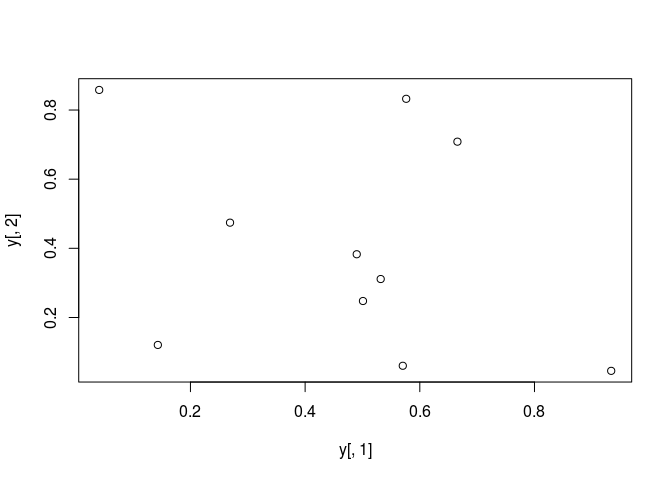\
All pairs
pairs(y)
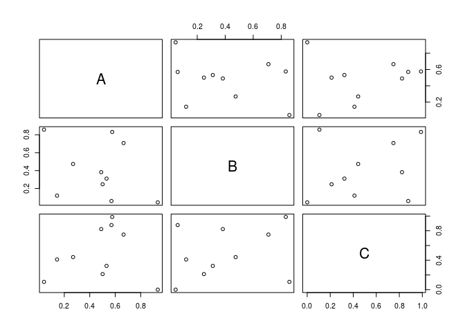\
With labels
plot(y[,1], y[,2], pch=20, col="red", main="Symbols and Labels")
text(y[,1]+0.03, y[,2], rownames(y))
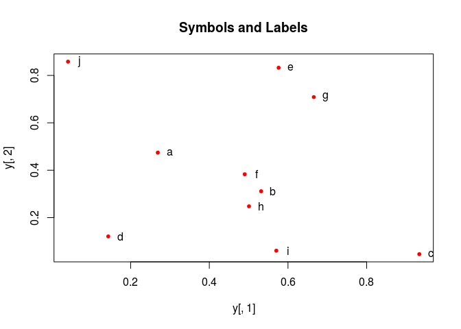\
More examples
Print instead of symbols the row names
plot(y[,1], y[,2], type="n", main="Plot of Labels")
text(y[,1], y[,2], rownames(y))
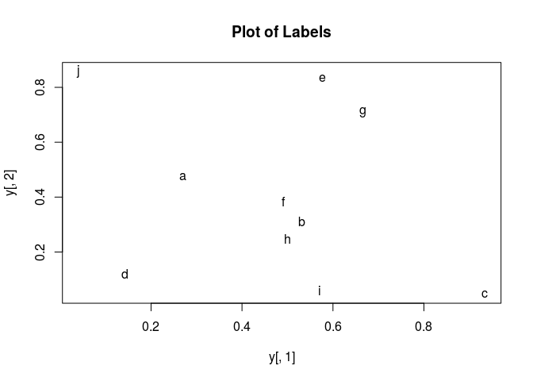\
Usage of important plotting parameters
grid(5, 5, lwd = 2)
op <- par(mar=c(8,8,8,8), bg="lightblue")
plot(y[,1], y[,2], type="p", col="red", cex.lab=1.2, cex.axis=1.2,
cex.main=1.2, cex.sub=1, lwd=4, pch=20, xlab="x label",
ylab="y label", main="My Main", sub="My Sub")
par(op)
_Important arguments
mar: specifies the margin sizes around the plotting area in order:c(bottom, left, top, right)col: color of symbolspch: type of symbols, samples:example(points)lwd: size of symbolscex.*: control font sizes- For details see
?par
Add regression line
plot(y[,1], y[,2])
myline <- lm(y[,2]~y[,1]); abline(myline, lwd=2)
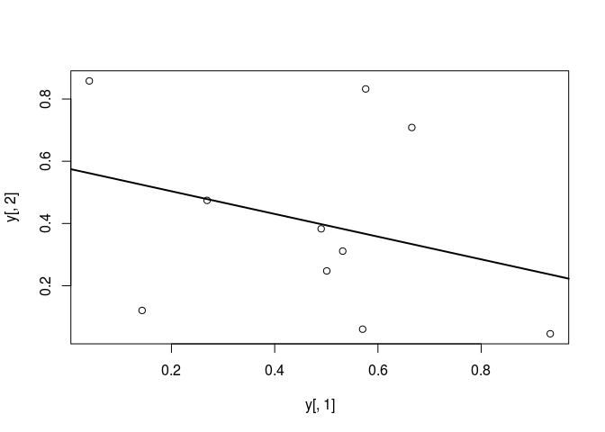\
summary(myline)
##
## Call:
## lm(formula = y[, 2] ~ y[, 1])
##
## Residuals:
## Min 1Q Median 3Q Max
## -0.40357 -0.17912 -0.04299 0.22147 0.46623
##
## Coefficients:
## Estimate Std. Error t value Pr(>|t|)
## (Intercept) 0.5764 0.2110 2.732 0.0258 *
## y[, 1] -0.3647 0.3959 -0.921 0.3839
## ---
## Signif. codes: 0 '***' 0.001 '**' 0.01 '*' 0.05 '.' 0.1 ' ' 1
##
## Residual standard error: 0.3095 on 8 degrees of freedom
## Multiple R-squared: 0.09589, Adjusted R-squared: -0.01712
## F-statistic: 0.8485 on 1 and 8 DF, p-value: 0.3839
Log scale
Same plot as above, but on log scale
plot(y[,1], y[,2], log="xy")
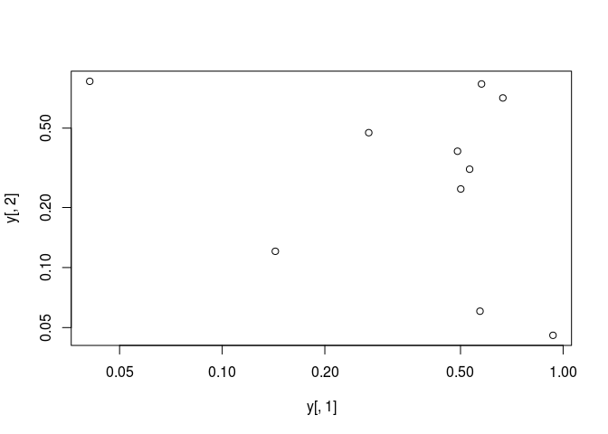\
Add a mathematical expression
plot(y[,1], y[,2]); text(y[1,1], y[1,2], expression(sum(frac(1,sqrt(x^2*pi)))), cex=1.3)
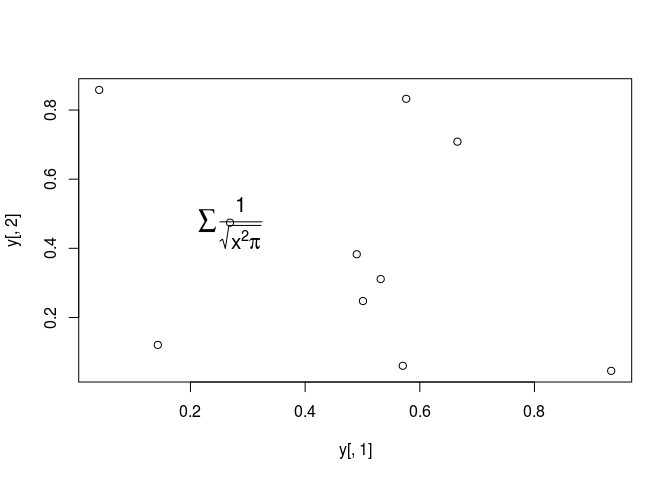\
Homework 3B
Homework 3B: Scatter Plots
Line Plots
Single data set
plot(y[,1], type="l", lwd=2, col="blue")
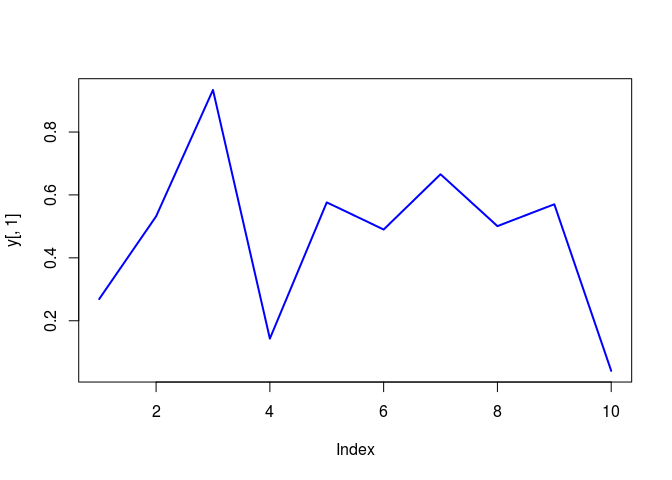\
Many Data Sets
Plots line graph for all columns in data frame y. The split.screen function is used in this example in a for loop to overlay several line graphs in the same plot.
split.screen(c(1,1))
## [1] 1
plot(y[,1], ylim=c(0,1), xlab="Measurement", ylab="Intensity", type="l", lwd=2, col=1)
for(i in 2:length(y[1,])) {
screen(1, new=FALSE)
plot(y[,i], ylim=c(0,1), type="l", lwd=2, col=i, xaxt="n", yaxt="n", ylab="", xlab="", main="", bty="n")
}
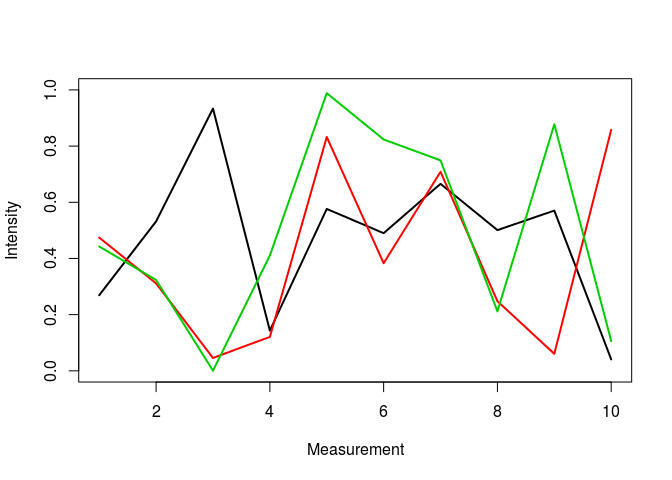\
close.screen(all=TRUE)
Bar Plots
Basics
barplot(y[1:4,], ylim=c(0, max(y[1:4,])+0.3), beside=TRUE, legend=letters[1:4])
text(labels=round(as.vector(as.matrix(y[1:4,])),2), x=seq(1.5, 13, by=1) + sort(rep(c(0,1,2), 4)), y=as.vector(as.matrix(y[1:4,]))+0.04)
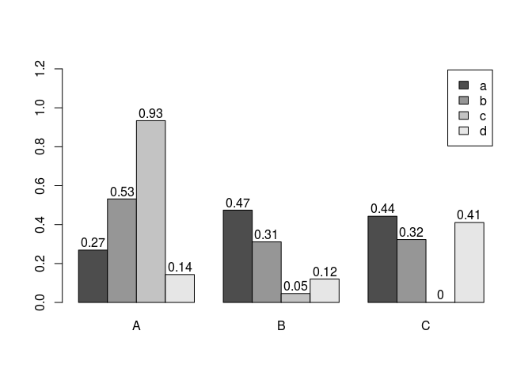\
Error Bars
bar <- barplot(m <- rowMeans(y) * 10, ylim=c(0, 10))
stdev <- sd(t(y))
arrows(bar, m, bar, m + stdev, length=0.15, angle = 90)
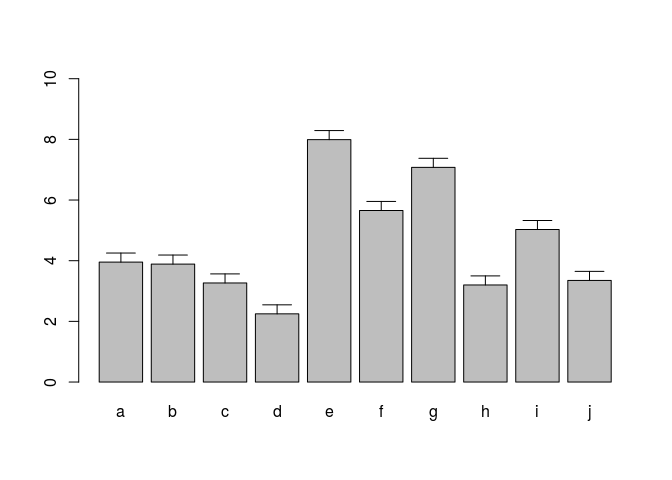\
Histograms
hist(y, freq=TRUE, breaks=10)
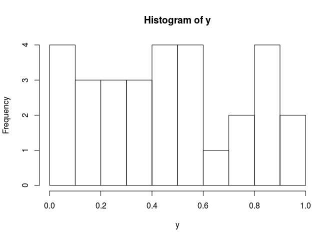\
Density Plots
plot(density(y), col="red")
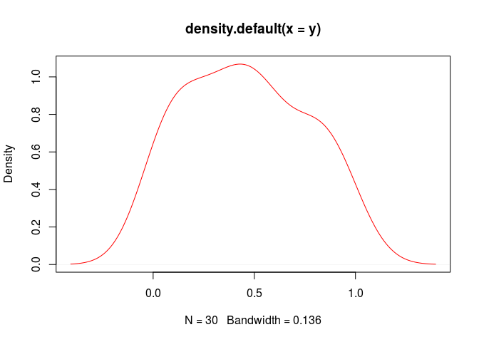\
Pie Charts
pie(y[,1], col=rainbow(length(y[,1]), start=0.1, end=0.8), clockwise=TRUE)
legend("topright", legend=row.names(y), cex=1.3, bty="n", pch=15, pt.cex=1.8,
col=rainbow(length(y[,1]), start=0.1, end=0.8), ncol=1)
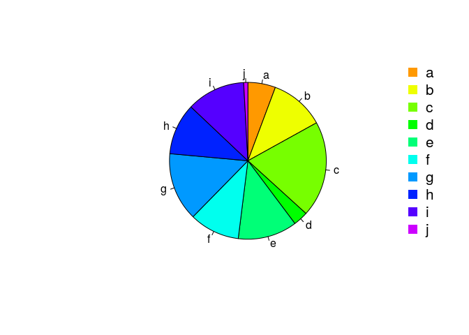\
Color Selection Utilities
Default color palette and how to change it
palette()
## [1] "black" "red" "green3" "blue" "cyan" "magenta" "yellow" "gray"
palette(rainbow(5, start=0.1, end=0.2))
palette()
## [1] "#FF9900" "#FFBF00" "#FFE600" "#F2FF00" "#CCFF00"
palette("default")
The gray function allows to select any type of gray shades by providing values from 0 to 1
gray(seq(0.1, 1, by= 0.2))
## [1] "#1A1A1A" "#4D4D4D" "#808080" "#B3B3B3" "#E6E6E6"
Color gradients with colorpanel function from gplots library`
library(gplots)
##
## Attaching package: 'gplots'
## The following object is masked from 'package:stats':
##
## lowess
colorpanel(5, "darkblue", "yellow", "white")
## [1] "#00008B" "#808046" "#FFFF00" "#FFFF80" "#FFFFFF"
Much more on colors in R see Earl Glynn’s color chart here
Saving Graphics to File
After the pdf() command all graphs are redirected to file test.pdf. Works for all common formats similarly: jpeg, png, ps, tiff, …
pdf("test.pdf")
plot(1:10, 1:10)
dev.off()
Generates Scalable Vector Graphics (SVG) files that can be edited in vector graphics programs, such as InkScape.
library("RSvgDevice")
devSVG("test.svg")
plot(1:10, 1:10)
dev.off()
Homework 3C
Homework 3C: Bar Plots
Analysis Routine
Overview
The following exercise introduces a variety of useful data analysis utilities in R.
Analysis Routine: Data Import
-
Step 1: To get started with this exercise, direct your R session to a dedicated workshop directory and download into this directory the following sample tables. Then import the files into Excel and save them as tab delimited text files.
Import the tables into R
Import molecular weight table
my_mw <- read.delim(file="MolecularWeight_tair7.xls", header=T, sep="\t")
my_mw[1:2,]
Import subcelluar targeting table
my_target <- read.delim(file="TargetP_analysis_tair7.xls", header=T, sep="\t")
my_target[1:2,]
Online import of molecular weight table
my_mw <- read.delim(file="http://faculty.ucr.edu/~tgirke/Documents/R_BioCond/Samples/MolecularWeight_tair7.xls", header=T, sep="\t")
my_mw[1:2,]
## Sequence.id Molecular.Weight.Da. Residues
## 1 AT1G08520.1 83285 760
## 2 AT1G08530.1 27015 257
Online import of subcelluar targeting table
my_target <- read.delim(file="http://faculty.ucr.edu/~tgirke/Documents/R_BioCond/Samples/TargetP_analysis_tair7.xls", header=T, sep="\t")
my_target[1:2,]
## GeneName Loc cTP mTP SP other
## 1 AT1G08520.1 C 0.822 0.137 0.029 0.039
## 2 AT1G08530.1 C 0.817 0.058 0.010 0.100
Merging Data Frames
- Step 2: Assign uniform gene ID column titles
colnames(my_target)[1] <- "ID"
colnames(my_mw)[1] <- "ID"
- Step 3: Merge the two tables based on common ID field
my_mw_target <- merge(my_mw, my_target, by.x="ID", by.y="ID", all.x=T)
- Step 4: Shorten one table before the merge and then remove the non-matching rows (NAs) in the merged file
my_mw_target2a <- merge(my_mw, my_target[1:40,], by.x="ID", by.y="ID", all.x=T) # To remove non-matching rows, use the argument setting 'all=F'.
my_mw_target2 <- na.omit(my_mw_target2a) # Removes rows containing "NAs" (non-matching rows).
- Homework 3D: How can the merge function in the previous step be executed so that only the common rows among the two data frames are returned? Prove that both methods - the two step version with
na.omitand your method - return identical results. - Homework 3E: Replace all
NAsin the data framemy_mw_target2awith zeros.
Filtering Data
- Step 5: Retrieve all records with a value of greater than 100,000 in ‘MW’ column and ‘C’ value in ‘Loc’ column (targeted to chloroplast).
query <- my_mw_target[my_mw_target[, 2] > 100000 & my_mw_target[, 4] == "C", ]
query[1:4, ]
## ID Molecular.Weight.Da. Residues Loc cTP mTP SP other
## 219 AT1G02730.1 132588 1181 C 0.972 0.038 0.008 0.045
## 243 AT1G02890.1 136825 1252 C 0.748 0.529 0.011 0.013
## 281 AT1G03160.1 100732 912 C 0.871 0.235 0.011 0.007
## 547 AT1G05380.1 126360 1138 C 0.740 0.099 0.016 0.358
dim(query)
## [1] 170 8
- Homework 3F: How many protein entries in the
my_mw_targetdata frame have a MW of greater then 4,000 and less then 5,000. Subset the data frame accordingly and sort it by MW to check that your result is correct.
String Substitutions
- Step 6: Use a regular expression in a substitute function to generate a separate ID column that lacks the gene model extensions. «label=Exercise 4.7, eval=TRUE, echo=TRUE, keep.source=TRUE»=
my_mw_target3 <- data.frame(loci=gsub("\\..*", "", as.character(my_mw_target[,1]), perl = TRUE), my_mw_target)
my_mw_target3[1:3,1:8]
## loci ID Molecular.Weight.Da. Residues Loc cTP mTP SP
## 1 AT1G01010 AT1G01010.1 49426 429 _ 0.10 0.090 0.075
## 2 AT1G01020 AT1G01020.1 28092 245 * 0.01 0.636 0.158
## 3 AT1G01020 AT1G01020.2 21711 191 * 0.01 0.636 0.158
- Homework 3G: Retrieve those rows in
my_mw_target3where the second column contains the following identifiers:c("AT5G52930.1", "AT4G18950.1", "AT1G15385.1", "AT4G36500.1", "AT1G67530.1"). Use the%in%function for this query. As an alternative approach, assign the second column to the row index of the data frame and then perform the same query again using the row index. Explain the difference of the two methods.
Calculations on Data Frames
- Step 7: Count the number of duplicates in the loci column with the
tablefunction and append the result to the data frame with thecbindfunction.
mycounts <- table(my_mw_target3[,1])[my_mw_target3[,1]]
my_mw_target4 <- cbind(my_mw_target3, Freq=mycounts[as.character(my_mw_target3[,1])])
- Step 8: Perform a vectorized devision of columns 3 and 4 (average AA weight per protein)
data.frame(my_mw_target4, avg_AA_WT=(my_mw_target4[,3] / my_mw_target4[,4]))[1:2,5:11]
## Loc cTP mTP SP other Freq avg_AA_WT
## 1 _ 0.10 0.090 0.075 0.925 1 115.2121
## 2 * 0.01 0.636 0.158 0.448 2 114.6612
- Step 9: Calculate for each row the mean and standard deviation across several columns
mymean <- apply(my_mw_target4[,6:9], 1, mean)
mystdev <- apply(my_mw_target4[,6:9], 1, sd, na.rm=TRUE)
data.frame(my_mw_target4, mean=mymean, stdev=mystdev)[1:2,5:12]
## Loc cTP mTP SP other Freq mean stdev
## 1 _ 0.10 0.090 0.075 0.925 1 0.2975 0.4184595
## 2 * 0.01 0.636 0.158 0.448 2 0.3130 0.2818912
Plotting Example
- Step 10: Generate scatter plot columns: ‘MW’ and ‘Residues’
plot(my_mw_target4[1:500,3:4], col="red")
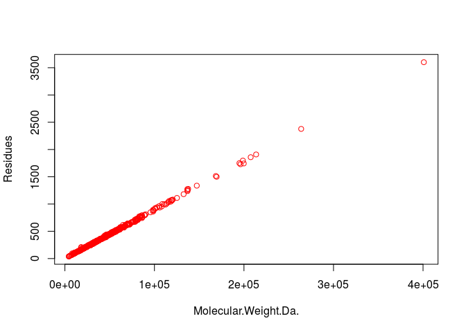\
Export Results and Run Entire Exercise as Script
- Step 11: Write the data frame
my_mw_target4into a tab-delimited text file and inspect it in Excel.
write.table(my_mw_target4, file="my_file.xls", quote=F, sep="\t", col.names = NA)
- Homework 3H: Write all commands from this exercise into an R script named
exerciseRbasics.R, or download it from here. Then execute the script with thesourcefunction like this:source("exerciseRbasics.R"). This will run all commands of this exercise and generate the corresponding output files in the current working directory.
source("exerciseRbasics.R")
R Markdown
Overview
R Markdown combines markdown (an easy to write plain text format) with embedded
R code chunks. When compiling R Markdown documents, the code components can be
evaluated so that both the code and its output can be included in the final
document. This makes analysis reports highly reproducible by allowing to automatically
regenerate them when the underlying R code or data changes. R Markdown
documents (.Rmd files) can be rendered to various formats including HTML and
PDF. The R code in an .Rmd document is processed by knitr, while the
resulting .md file is rendered by pandoc to the final output formats
(e.g. HTML or PDF). Historically, R Markdown is an extension of the older
Sweave/Latex environment. Rendering of mathematical expressions and reference
management is also supported by R Markdown using embedded Latex syntax and
Bibtex, respectively.
Quick Start
Install R Markdown
install.packages("rmarkdown")
Initialize a new R Markdown (Rmd) script
To minimize typing, it can be helful to start with an R Markdown template and
then modify it as needed. Note the file name of an R Markdown scirpt needs to
have the extension .Rmd. Template files for the following examples are available
here:
- R Markdown sample script:
sample.Rmd - Bibtex file for handling citations and reference section:
bibtex.bib
Users want to download these files, open the sample.Rmd file with their preferred R IDE
(e.g. RStudio, vim or emacs), initilize an R session and then direct their R session to
the location of these two files.
Metadata section
The metadata section (YAML header) in an R Markdown script defines how it will be processed and
rendered. The metadata section also includes both title, author, and date information as well as
options for customizing the output format. For instance, PDF and HTML output can be defined
with pdf_document and html_document, respectively. The BiocStyle:: prefix will use the
formatting style of the BiocStyle
package from Bioconductor.
---
title: "My First R Markdown Document"
author: "Author: First Last"
date: "Last update: 21 June, 2016"
output:
BiocStyle::html_document:
toc: true
toc_depth: 3
fig_caption: yes
fontsize: 14pt
bibliography: bibtex.bib
---
Render Rmd script
An R Markdown script can be evaluated and rendered with the following render command or by pressing the knit button in RStudio.
The output_format argument defines the format of the output (e.g. html_document). The setting output_format="all" will generate
all supported output formats. Alternatively, one can specify several output formats in the metadata section as shown in the above example.
rmarkdown::render("sample.Rmd", clean=TRUE, output_format="html_document")
The following shows two options how to run the rendering from the command-line.
$ echo "rmarkdown::render('sample.Rmd', clean=TRUE)" | R --slave
$ Rscript -e "rmarkdown::render('sample.Rmd', clean=TRUE)"
Alternatively, one can use a Makefile to evaluate and render an R Markdown
script. A sample Makefile for rendering the above sample.Rmd can be
downloaded here.
To apply it to a custom Rmd file, one needs open the Makefile in a text
editor and change the value assigned to MAIN (line 13) to the base name of
the corresponding .Rmd file (e.g. assign systemPipeRNAseq if the file
name is systemPipeRNAseq.Rmd). To execute the Makefile, run the following
command from the command-line.
$ make -B
R code chunks
R Code Chunks can be embedded in an R Markdown script by using three backticks at the beginning of a new line along with arguments enclosed in curly braces controlling the behavior of the code. The following lines contain the plain R code. A code chunk is terminated by a new line starting with three backticks. The following shows an example of such a code chunk. Note the backslashes are not part of it. They have been added to print the code chunk syntax in this document.
```\{r code_chunk_name, eval=FALSE\}
x <- 1:10
```
The following lists the most important arguments to control the behavior of R code chunks:
r: specifies language for code chunk, here Rchode_chunk_name: name of code chunk; this name needs to be uniqueeval: if assignedTRUEthe code will be evaluatedwarning: if assignedFALSEwarnings will not be shownmessage: if assignedFALSEmessages will not be showncache: if assignedTRUEresults will be cached to reuse in future rendering instancesfig.height: allows to specify height of figures in inchesfig.width: allows to specify width of figures in inches
For more details on code chunk options see here.
Learning Markdown
The basic syntax of Markdown and derivatives like kramdown is extremely easy to learn. Rather than providing another introduction on this topic, here are some useful sites for learning Markdown:
- Markdown Intro on GitHub
- Markdown Cheet Sheet
- Markdown Basics from RStudio
- R Markdown Cheat Sheet
- kramdown Syntax
Tables
There are several ways to render tables. First, they can be printed within the R code chunks. Second,
much nicer formatted tables can be generated with the functions kable, pander or xtable. The following
example uses kable from the knitr package.
library(knitr)
kable(iris[1:12,])
Sepal.Length Sepal.Width Petal.Length Petal.Width Species
————- ———— ————- ———— ——–
5.1 3.5 1.4 0.2 setosa
4.9 3.0 1.4 0.2 setosa
4.7 3.2 1.3 0.2 setosa
4.6 3.1 1.5 0.2 setosa
5.0 3.6 1.4 0.2 setosa
5.4 3.9 1.7 0.4 setosa
4.6 3.4 1.4 0.3 setosa
5.0 3.4 1.5 0.2 setosa
4.4 2.9 1.4 0.2 setosa
4.9 3.1 1.5 0.1 setosa
5.4 3.7 1.5 0.2 setosa
4.8 3.4 1.6 0.2 setosa
Figures
Plots generated by the R code chunks in an R Markdown document can be automatically
inserted in the output file. The size of the figure can be controlled with the fig.height
and fig.width arguments.
library(ggplot2)
dsmall <- diamonds[sample(nrow(diamonds), 1000), ]
ggplot(dsmall, aes(color, price/carat)) + geom_jitter(alpha = I(1 / 2), aes(color=color))

Sometimes it can be useful to explicitly write an image to a file and then insert that
image into the final document by referencing its file name in the R Markdown source. For
instance, this can be useful for time consuming analyses. The following code will generate a
file named myplot.png. To insert the file in the final document, one can use standard
Markdown or HTML syntax, e.g.: <img src="myplot.png"/>.
png("myplot.png")
ggplot(dsmall, aes(color, price/carat)) + geom_jitter(alpha = I(1 / 2), aes(color=color))
dev.off()
## png
## 2

Inline R code
To evaluate R code inline, one can enclose an R expression with a single back-tick
followed by r and then the actual expression. For instance, the back-ticked version
of ‘r 1 + 1’ evaluates to 2 and ‘r pi’ evaluates to 3.1415927.
Mathematical equations
To render mathematical equations, one can use standard Latex syntax. When expressions are
enclosed with single $ signs then they will be shown inline, while
enclosing them with double $$ signs will show them in display mode. For instance, the following
Latex syntax d(X,Y) = \sqrt[]{ \sum_{i=1}^{n}{(x_{i}-y_{i})^2} } renders in display mode as follows:
Citations and bibliographies
Citations and bibliographies can be autogenerated in R Markdown in a similar
way as in Latex/Bibtex. Reference collections should be stored in a separate
file in Bibtex or other supported formats. To cite a publication in an R Markdown
script, one uses the syntax [@<id1>] where <id1> needs to be replaced with a
reference identifier present in the Bibtex database listed in the metadata section
of the R Markdown script (e.g. bibtex.bib). For instance, to cite Lawrence et al.
(2013), one uses its reference identifier (e.g. Lawrence2013-kt) as <id1> [@Lawrence2013-kt].
This will place the citation inline in the text and add the corresponding
reference to a reference list at the end of the output document. For the latter a
special section called References needs to be specified at the end of the R Markdown script.
To fine control the formatting of citations and reference lists, users want to consult this
the corresponding R Markdown page.
Also, for general reference management and outputting references in Bibtex format Paperpile
can be very helpful.
Session Info
sessionInfo()
## R version 3.2.3 (2015-12-10)
## Platform: x86_64-pc-linux-gnu (64-bit)
## Running under: Ubuntu 14.04.3 LTS
##
## locale:
## [1] LC_CTYPE=en_US.UTF-8 LC_NUMERIC=C LC_TIME=en_US.UTF-8
## [4] LC_COLLATE=en_US.UTF-8 LC_MONETARY=en_US.UTF-8 LC_MESSAGES=en_US.UTF-8
## [7] LC_PAPER=en_US.UTF-8 LC_NAME=C LC_ADDRESS=C
## [10] LC_TELEPHONE=C LC_MEASUREMENT=en_US.UTF-8 LC_IDENTIFICATION=C
##
## attached base packages:
## [1] stats graphics utils datasets grDevices methods base
##
## other attached packages:
## [1] ggplot2_2.0.0 limma_3.26.3 BiocStyle_1.8.0
##
## loaded via a namespace (and not attached):
## [1] Rcpp_0.12.3 codetools_0.2-14 digest_0.6.9 plyr_1.8.3 grid_3.2.3
## [6] gtable_0.1.2 formatR_1.2.1 magrittr_1.5 evaluate_0.8 scales_0.3.0
## [11] stringi_1.0-1 rmarkdown_0.9.2 tools_3.2.3 stringr_1.0.0 munsell_0.4.2
## [16] yaml_2.1.13 colorspace_1.2-6 htmltools_0.3 knitr_1.12